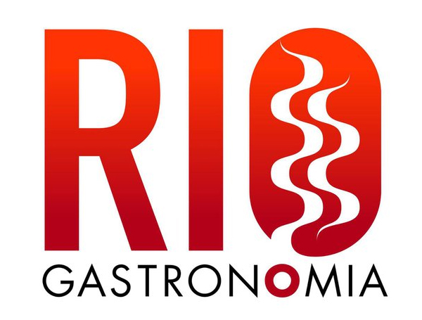

O Evento
O maior evento de gastronomia do país chega à sua 8ª edição com muitas novidades e pela terceira vez, o Rio Gastronomia será realizado nos Armazéns 3 e 4 do Pier Mauá.
Os visitantes poderão conferir aulas com grandes nomes da gastronomia, alguns dos melhores restaurantes, bares e food trucks do Rio, shows, além da feira de produtos do interior do estado e de cachaças. Tudo isso em um dos espaços mais charmosos e badalados do Rio.
O Guia Rio Show de Gastronomia chega a sua 16ª edição e continua a avaliar os restaurantes minuciosamente para um julgamento ainda mais aprofundado.
Com a experiência de quem acompanha de perto a evolução da gastronomia carioca há mais de duas décadas, o Rio Show chegou a uma lista dos 200 endereços mais representativos da cidade, entre restaurantes sofisticados e botequins, os famosos pés-sujos, uma instituição local.
A etapa seguinte é montar um corpo de jurados para visitar, anonimamente, as casas selecionadas e dar sua opinião.
Providos de um cartão de crédito empresarial, durante dois meses, nossos ilustres parceiros visitarão as duas centenas de casas. O foco dos jurados é, principalmente, a qualidade (e a originalidade) da cozinha, mas sem deixar de lado eficiência de serviço no salão, carta (e temperatura) de bebidas e o ambiente. O veredicto é o passo seguinte. Ou melhor, a concessão de garfinhos, a tradicional cotação do Rio Show que vai de um a cinco talheres.

Patrocinadores
Realização: